<!DOCTYPE html>
<html lang="en">
<head>
  <meta charset="UTF-8">
  <meta name="viewport" content="width=device-width, initial-scale=1.0">
  <title>trace</title>
  <link rel="icon" type="image/png" href="icon.png">
  <style>
    body {
      font-family: 'Source Sans Pro', sans-serif;
      margin: 0;
      padding: 0;
      background-color: #fff;
      color: #000;
      text-align: center;
    }
    .centered-page {
      display: flex;
      flex-direction: column;
      align-items: center;
      justify-content: center;
      min-height: 100vh;
    }
    h1, p, a {
      text-align: center;
    }
    .button {
      display: block;
      margin: 10px;
      padding: 10px 20px;
      background-color: #000;
      color: #fff;
      text-decoration: none;
      border: none;
      font-size: 16px;
      cursor: pointer;
    }
    .names-container {
      text-align: center;
    }
    .name-grid {
      display: grid;
      grid-template-columns: repeat(3, 100px);
      gap: 15px;
      justify-content: center;
      margin: 20px auto;
    }
    .name-item {
      cursor: pointer;
      font-size: 16px;
    }
    .name-item:hover {
      text-decoration: underline;
    }
    .story-container {
      max-width: 600px;
      margin: 40px auto;
      padding: 20px;
      line-height: 1.6;
    }
    .story-photo {
      width: 100%;
      margin: 20px 0;
    }
  </style>
</head>
<body>
  <div id="root"></div>
  <script>
    const root = document.getElementById('root');
    const pages = {
      home: `
        <div class="centered-page">
          <p>a digital archive of makeup among women.</p>
          <a class="button" href="#about">about the project</a>
          <a class="button" href="#stories">stories</a>
          <a class="button" href="photobook.pdf" target="_blank">the photobook</a>
        </div>
      `,
      about: `
        <div class="centered-page">
          <div class="story-container">
            <p>
              trace is a visual and narrative exploration of the relationships women—especially women of color—have with makeup as a tool for identity, culture, and care. set entirely in college dorms and centered around mirrors, the series captures young women in moments of quiet routine and honest reflection. these are not glamorized or highly curated beauty portraits. they are documentary-style glimpses into how women see themselves and shape themselves, every day. each subject was photographed in her own space, surrounded by the clutter and comfort of student life—products half-used, towels slung on doors, phones playing music. the mirror becomes the central site of transformation. each shoot was accompanied by a recorded conversation, pieces of which appear throughout this book. together, the images and words aim to show makeup not as mask, but as medium: for storytelling, memory, and becoming.
              <br><br>
              this project comes from a personal place. i’ve loved makeup for as long as i can remember. starting with stealing bits from my mom’s stash and teaching myself through online tutorials. what began as play turned into ritual, reflection, and expression. creating trace, for me, was a way to extend that personal history into something collective—to explore how other women relate to the same act in entirely different ways.
            </p>
            <a class="button" href="#">back</a>
          </div>
        </div>
      `,
      stories: `
        <div class="centered-page">
          <div class="names-container">
            <p>Click a name to explore their story.</p>
            <div class="name-grid">
              <div class="name-item" onclick="location.hash='story-Karina'">Karina</div>
              <div class="name-item" onclick="location.hash='story-Waadaa'">Waadaa</div>
              <div class="name-item" onclick="location.hash='story-Lizzet'">Lizzet</div>
              <div class="name-item" onclick="location.hash='story-Grace'">Grace</div>
              <div class="name-item" onclick="location.hash='story-Kamalani'">Kamalani</div>
              <div class="name-item" onclick="location.hash='story-Dani'">Dani</div>
              <div class="name-item" style="grid-column: 2 / span 1;" onclick="location.hash='story-Karla'">Karla</div>
            </div>
            <a class="button" href="#">back</a>
          </div>
        </div>
      `
    };
  
    const renderStoryPage = (name) => {
      const prefix = name.toLowerCase();
      return `
        <div class="story-container">
          <h2>${fullNames[name] || name}</h2>
  
          
          <div style="text-align: left;">
            <p><strong><em>Q:</em></strong><br>A:</p>
            <p><strong><em>Q:</em></strong><br>A:</p>
            <p><strong><em>Q:</em></strong><br>A:</p>
          </div>
  
          
          <div style="text-align: left;">
            <p><strong><em>Q:</em></strong><br>A:</p>
            <p><strong><em>Q:</em></strong><br>A:</p>
            <p><strong><em>Q:</em></strong><br>A:</p>
          </div>
  
          
          <div style="text-align: left;">
            <p><strong><em>Q:</em></strong><br>A:</p>
            <p><strong><em>Q:</em></strong><br>A:</p>
            <p><strong><em>Q:</em></strong><br>A:</p>
          </div>
  
          <a class="button" href="#stories">back</a>
        </div>
      `;
    };
  
    const fullNames = {
        Dani: "Dani Reynoso",
        Waadaa: "Waadaa Daka",
        Kamalani: "Kamalani Aipa",
        Karla: "Karla Cruz Sanchez",
        Lizzet: "Lizzet Solache Salgado",
        Grace: "Grace Bacon",
        Karina: "Karina Morales-Pineda"
        };

    const render = () => {
  const hash = window.location.hash.replace('#', '') || 'home';
  if (hash.startsWith('story-')) {
    const name = hash.replace('story-', '');
    if (name === 'Karina') {
      root.innerHTML = `
        <div class="story-container">
          <h2>Karina Morales-Pineda</h2>
          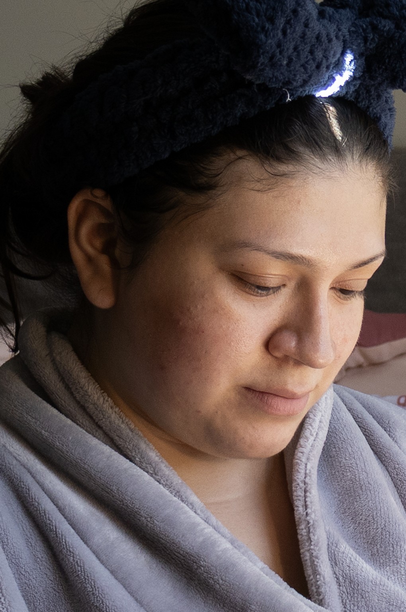
          <div style="text-align:left;">
            <p><strong><em>Q: Who first introduced you to makeup? How did you start doing it?</em></strong><br>A: I have an older sister. And she went through the biggest makeup phase when she was in middle school—so like, 2016. You know, like the 2016 makeup. She would beg me to let her do my makeup. She’d be like, "Please!" and she would do the craziest, most full glam looks. At this point, I was maybe 12 or 13. She would always watch makeup YouTubers—makeup was her thing. And I’d always be like, “Can you please do my eyebrows? Can you put on highlighter?” I used to do my eyebrows so thick. Like blocky eyebrows. I did them every single day for school because that’s what was in. But now I just love doing my makeup.
</p>
            <p><strong><em>Q: So you started wearing it around 2016?</em></strong><br>Yeah, I always liked doing my eyebrows. I never did a full face, but I always did my brows and highlighter. You remember when highlighter was huge? I had a fan brush—I would fan that shit. I’d pull up to soccer practice with my brows and highlighter and people would be like, "Oh my God, you’re so cute."</p>
            <p><strong><em>Q: What’s your favorite part of getting ready?</em></strong><br>A: Listening to music and taking time for myself. If I’m going out to a party, sometimes getting ready is my favorite part of the night. All the girls are getting ready, maybe we’re drinking, the playlist is fun. It’s just such a vibe.</p>
          </div>
          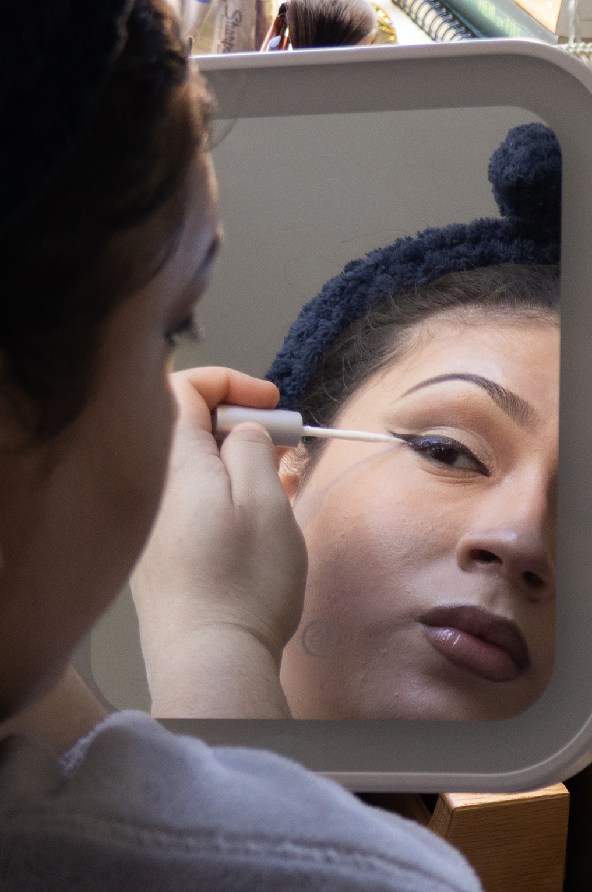
          <div style="text-align:left;">
            <p><strong><em>Q: Do you wear makeup differently depending on who you're around or the setting?</em></strong><br>A: When I first came to Carleton, I realized people here don’t really do full glam. Like, people don’t wear lashes or cut creases. I would pull up to class looking cute, with lashes and everything, but I realized it wasn’t really common here. So I started doing it less—just for special occasions. But at home, people wear full faces for regular things, and I love that. I started wearing lashes again this year—now I can’t do my makeup without them. My lashes are so thin, I don’t even wear mascara anymore. I love lash clusters. My sister used to help me with full lash bands, but I still struggle with those.
</p>
            <p><strong><em>Q: What role does makeup play in your identity?</em></strong><br>A: When I’m not feeling good—like if I’m feeling depressed or off—I love doing my makeup. Even if I feel like shit, at least I don’t look like it. It helps me feel like myself. I feel really cute and girly, which I love. And when I have a good lip combo? That’s so Chicana, like chola vibes. I love that. Makeup makes me feel more me.
</p>
            <p><strong><em>Q: What beauty standards did you grow up with?</em></strong><br>A: My mom didn’t wear makeup growing up. She told me the first time she did her makeup was for her wedding. She didn’t start using makeup until she was in her 30s. No skincare or anything. So growing up, I didn’t see a lot of beauty routines. But now, I connect makeup with self-care. My sister taught me everything—she’d give me her old makeup and we’d do it just for fun, even if we weren’t going anywhere. As we got older, we’d do our makeup and get drunk, and sometimes we’d go out, sometimes not. She’s three years older than me—turning 25 this year.
</p>
            <p><strong><em>Q: Has your cultural background influenced how you use makeup?</em></strong><br>A: Girlies in Houston go off. Like, full face for high school. Lashes every day. That wasn’t me, but seeing that made me feel comfortable doing my thing. At Carleton I felt like I stood out at first, but now I realize it’s not that serious. And yeah, sometimes I do feel like I’m giving Latina makeup. Someone once told me I was giving "copy and paste Latina" and I was like, okay, period! I think that’s a compliment. I love that style.
</p>
          </div>
          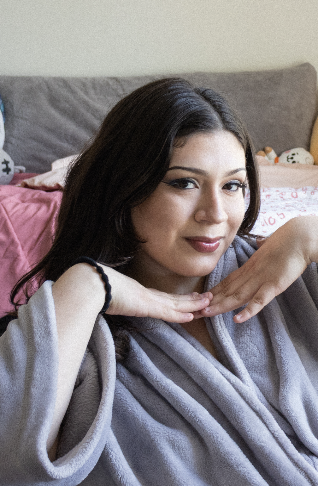
          <div style="text-align:left;">
            <p><strong><em>Q: Do you follow trends?</em></strong><br>A: Kinda. I like the 90s stuff—cool tones and that vibe. But not everything works for me. Like those laminated brows where they glue them down? My brows are too sparse for that. Thin brows are kind of in again though. And I can’t do natural makeup. I try, but it always ends up being a full face. I don’t get the clean girl look—it just doesn’t hit for me. When I see inspo pics, it’s usually white girls. Back in 2016, I tried to follow trends more. My sister was obsessed. I was just watching for the reviews, but now I love being able to buy my own stuff. 
</p>
            <p><strong><em>Q: What’s one makeup product you can’t live without?</em></strong><br>A: Eyeliner. I love eyeliner. Even if I don’t wear anything else, eyeliner changes my whole face. Or lip liner. But if I have to pick one—it’s eyeliner. Oh, and lashes. I’m obsessed with lash clusters.
</p>
            <p><strong><em>Q: What has makeup taught you about yourself? </em></strong><br>A: It’s taught me confidence. And not just when I’m wearing it, but also not to rely on it. Like, she—my makeup self—she’s kind of an alter ego. She’s not real. She comes off at the end of the night. But that feeling of confidence? It stays. I still feel like that girl even when the makeup is gone.
</p>
          </div>
          <a class="button" href="#stories">back</a>
        </div>
      `;
    } else if (name === 'Waadaa') {
      root.innerHTML = `
        <div class="story-container">
          <h2>Waadaa Daka</h2>
          
          <div style="text-align:left;">
            <p><strong><em>Q: What’s your earliest memory of makeup?</em></strong><br>A: I feel like it was probably me in elementary school, hanging out with friends. I wasn’t allowed to have makeup, so it was kind of a secret thing. They’d bring their funky-ass eyeshadows and I’d just use all of it. It didn’t make much sense, but it was fun.</p>
            <p><strong><em>Q: Who introduced you to makeup?</em></strong><br>A: A couple of my close friends from elementary school. They had more access to it than me. It wasn’t like they were any more experienced—they were just stealing stuff from their moms. That’s how I got introduced to it.</p>
            <p><strong><em>Q: Why did you start doing makeup?</em></strong><br>A: It was curiosity. My friends were doing it, so it became this fun thing we’d do together. The first time I actually wore it out in public and tried to do it well was maybe in seventh grade</p>
            <p><strong><em>Q: What’s your favorite part of getting ready?</em></strong><br>A: Anything with the eyes. I feel like I get to be the most creative there. It feels more like drawing. I like to do art, but with how busy I am at Carleton, I don’t have time for it. So doing makeup is like building a little bit of art into my daily routine.</p>
            <p><strong><em>Q: How do you feel with and without makeup?</em></strong><br>A:With it, I feel more present—like I’ve put something together. But I spent so long not wearing makeup that it doesn’t feel drastically different. If things aren’t aligning—whether I’m wearing makeup or not—it’s more about that than the makeup itself.</p>
            <p><strong><em>Q: Do you wear makeup differently around different people?</em></strong><br>A: It’s less about the people and more about the setting. If it’s a professional thing, I tone it down. I don’t want fun makeup to impact how I’m seen. But around friends or going to class, I do whatever I feel like.</p>

          </div>
          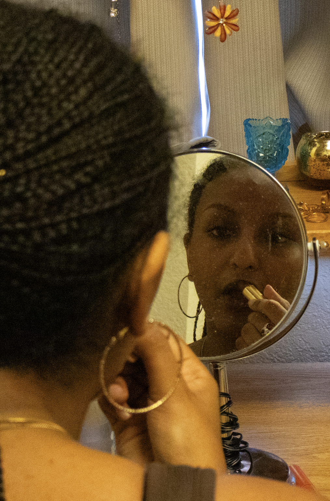
          <div style="text-align:left;">
            <p><strong><em>Q: What role does makeup play in your identity?</em></strong><br>A: When I was younger, it maybe played a more negative role. I was trying to use it to look a certain way. But over time, I shifted back to doing it just because it’s fun. It became more about the process and enjoyment.</p>
            <p><strong><em>Q: Are there beauty standards you grew up with?</em></strong><br>A: Yeah—typical American beauty standards. I grew up in a very white town in Minnesota. I think part of why I wore makeup early on was to look more like what people around me looked like. But those standards are unachievable for me. They affect me less now because no amount of makeup is going to change those systems.</p>
            <p><strong><em>Q: Has your cultural background shaped how you use makeup?</em></strong><br>A: I think it has, in ways I didn’t notice at first. In Ethiopian culture, there’s a specific style—heavy eyeliner and darker lips. I didn’t do that at first, but as I got older, I started leaning into it more. When I want to do a bigger or bolder look, I often find myself doing makeup that resembles that style—and I have more fun with it that way.</p>
            <p><strong><em>Q: Have you ever felt pressure to look a certain way?</em></strong><br>A:Definitely. I grew up not seeing people who looked like me. I didn’t know how to build a routine because I didn’t have anyone to model it off of. Now, I try to actively work against that pressure—but it’s always there, implicitly. </p>
            <p><strong><em>Q: How do trends affect you?</em></strong><br>A: I take influence from trends if something looks interesting to me. If it doesn’t work, I don’t keep it. But if it does—like switching to thinner brows—it stays. I’m open to experimenting, but I don’t feel pressured to follow everything just because it’s trending.</p>
            <p><strong><em>Q: What’s one makeup product you couldn’t live without?</em></strong><br>A: Brow products. If I’m doing nothing else, I’ll at least do my brows. That’s my baseline.</p>
            </div>
          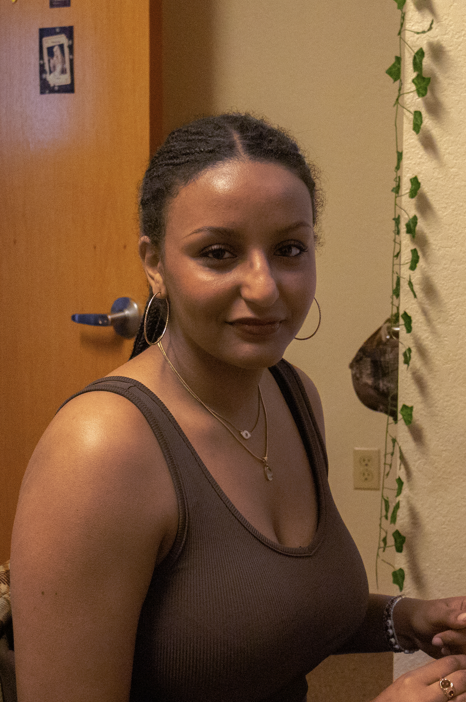
          <div style="text-align:left;">
            <p><strong><em>Q: Has anything about your relationship to makeup stayed consistent over time?</em></strong><br>A: The feeling of experimentation. That’s always been the biggest part. Even when I lost that for a bit, it came back. It’s never just been about looking a certain way—it’s always felt creative and fu</p>
            <p><strong><em>Q: What has makeup taught you about yourself?</em></strong><br>A: It’s shown me some insecurities, for sure. But it’s also reminded me that I still enjoy being creative, even if I don’t have time to draw or paint. Makeup became a new way to access that part of myself.</p>
            <p><strong><em>Q: How do you think your makeup use will change as you get older?</em></strong><br>A: I might do less intense stuff as I age or go into the workforce. But I hope I still get to experiment and have fun with it in my free time. It just might evolve based on what pressures or expectations come with getting older.:</p>
            <p><strong><em>Q: Has makeup helped your relationship with your appearance?</em></strong><br>A:It’s never been something I’m indifferent about. Makeup has either emphasized things I wanted to change or, now, helps me celebrate features I like. There’s always been something passionate about it—it’s not neutral for me.</p>
            <p><strong><em>Q: Did anyone ever tell you that you should or shouldn’t wear makeup?</em></strong><br>A: My mom always told me, “You don’t need to wear makeup.” She still says that—not as a “don’t,” but as a reminder that it shouldn’t ever feel like a need. It was helpful growing up to hear that.</p>
            </div>
          <a class="button" href="#stories">back</a>
        </div>
      `;
    } else if (name === 'Lizzet') {
      root.innerHTML = `
        <div class="story-container">
          <h2>Lizzet Solache Salgado</h2>
          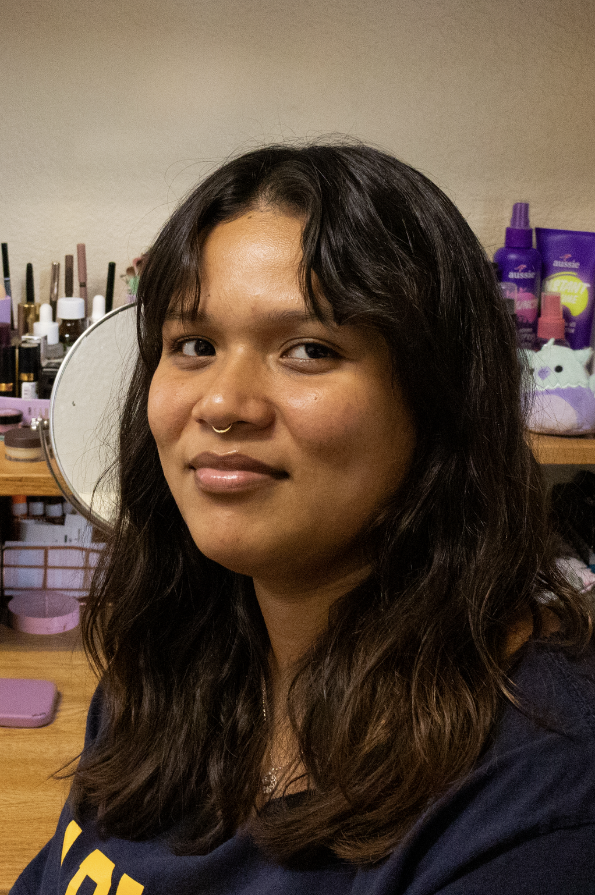
          <div style="text-align:left;">
            <p><strong><em>Q: What’s your earliest memory of makeup?</em></strong><br>A: Um... probably my sister stealing my mom’s.</p>
            <p><strong><em>Q: So would you say your mom was the one who introduced you to makeup?</em></strong><br>A: I guess you could say that, but I think it was more my (younger) sister.</p>
            <p><strong><em>Q:When did you start actually wearing makeup, like wearing it regularly? </em></strong><br>A: Probably during college. I didn’t really wear it in high school.</p>
            <p><strong><em>Q: Did anyone ever tell you that you should or shouldn’t wear makeup?</em></strong><br>A: My mom would always try to get me to wear it because I was kind of boyish growing up. She wanted me to be more girly.</p>
            <p><strong><em>Q: What’s your favorite part of getting ready?</em></strong><br>A: Just listening to music while I get ready.</p>
            <p><strong><em>Q: How do you feel with makeup on vs. without it?</em></strong><br>A: Without makeup, I feel tired and exposed. Like, I look very tired, which makes me feel not put together. With it on, I feel more energized—like, if I got up to put makeup on, I probably slept enough.</p>
            </div>
          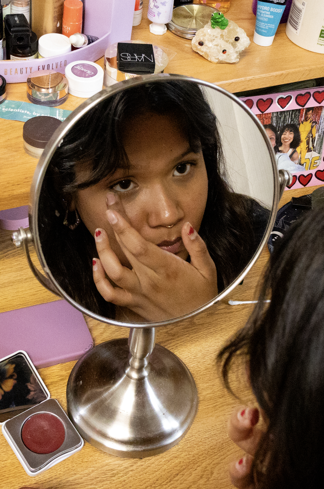
          <div style="text-align:left;">
            <p><strong><em>Q: When you wear makeup, do you feel like you’re changing yourself, revealing yourself, or both?</em></strong><br>A: I wouldn’t say I’m changing myself. But I do feel like it changes my energy. I feel better, so I’m more motivated to do things.</p>
            <p><strong><em>Q: Do you wear makeup differently around different people?</em></strong><br>A: Yeah, maybe at home I put way less on. They don’t really see me with it, so when I do, they make a big deal out of it. I don’t like the attention.</p>
            <p><strong><em>Q: What role does makeup play in your identity?</em></strong><br>A: I think it gives a little extra confidence. And that’s something I’ve been lacking, so it helps boost me a bit.</p>
            <p><strong><em>Q: Has your race or cultural background shaped how you use makeup?</em></strong><br>A: Yeah. When I’d look up makeup tutorials, I always searched for brown people doing them—not just whoever. I wanted to see someone with similar features to mine.</p>
            <p><strong><em>Q: Have you ever felt pressure to look a certain way?</em></strong><br>A: When I was little, yeah. But I grew out of that quickly. You kind of realize you’re always going to be brown, and you learn to be happy with that.</p>
            <p><strong><em>Q: Do you follow makeup trends?</em></strong><br>A: Not on purpose, but I’m sure seeing stuff influences me to try things. I don’t really watch makeup stuff anymore, though.</p>
            </div>
          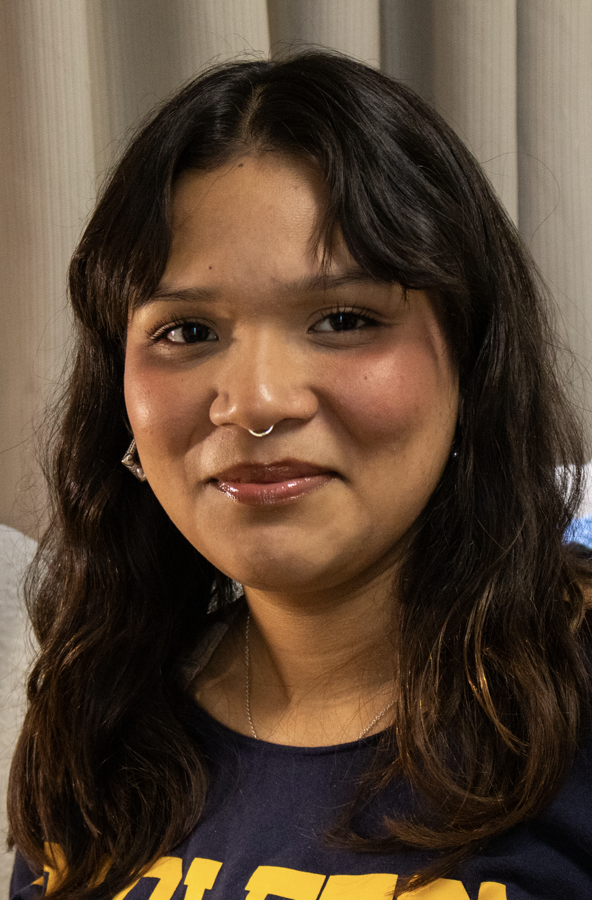
          <div style="text-align:left;">
            <p><strong><em>Q: What’s one makeup product you couldn’t live without?</em></strong><br>A: Mascara. I think it makes the biggest difference. Sometimes I’ll just wear that by itself.</p>
            <p><strong><em>Q: What has makeup taught you about yourself?</em></strong><br>A: I’m kind of scared to try new things. I didn’t wear makeup as a kid, so it felt like I was doing my middle school makeup phase in college. But I’ve grown from that. It’s been a slow progression.</p>
            <p><strong><em>Q: Do you think your makeup use will change as you get older?</em></strong><br>A: Maybe. Like, when I’m old-old, I hope I’ll still put on mascara and do a little something. But overall, it’ll probably lessen.</p>
            <p><strong><em>Q: Do you think you’ll ever stop wearing makeup entirely?</em></strong><br>A: Maybe. I can see myself stopping. Because I didn’t wear it for so long, I feel like I could go without it. And sometimes I do go a long time without wearing any, and it feels fine. But also, it’s fun.</p>
          </div>
          <a class="button" href="#stories">back</a>
        </div>
      `;
    } else if (name === 'Grace') {
      root.innerHTML = `
        <div class="story-container">
          <h2>Grace Bacon</h2>
          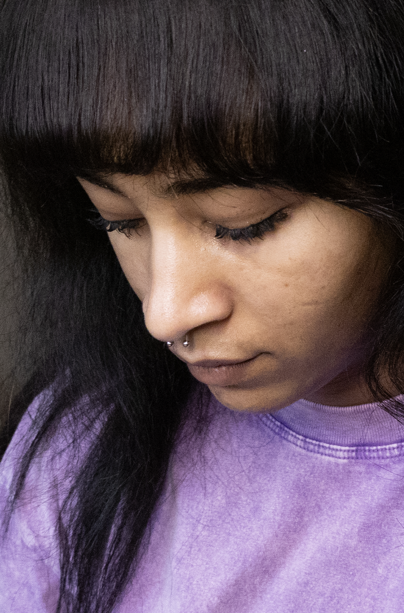
          <div style="text-align:left;">
            <p><strong><em>Q: How did you first get into makeup?</em></strong><br>A: I liked emo. So I was really into emo music and the culture—and a big part of that was the makeup. Like the alternative style. That’s when I started doing eyeliner and stuff. And then that made me try other things too.</p>
            <p><strong><em>Q: Did someone introduce you to it, or did you find it on your own?</em></strong><br>A: I kind of just came across it. My brother-in-law is really into music—he likes alternative stuff—so he showed me some of the bands I ended up liking. But it was just a big thing when I was a preteen. It really wasn’t that hard to find.</p>
            <p><strong><em>Q: When did you start actually wearing makeup?</em></strong><br>A: I would try when I was a preteen, but my mom wouldn’t let me wear it out. So I didn’t really start until I was a teenager. Even then, I was busy with school, so I didn’t get into it much. But during the pandemic, I had nothing but time—that’s when I really started doing it for real.</p>
            <p><strong><em>Q: How did you build your makeup routine? Did you learn from anyone in particular?</em></strong><br>A: My sisters don’t really wear makeup. I would watch “Get Ready With Me” videos, but I didn’t necessarily copy what they were using. I’d just go to the store, try stuff, and if I liked it, I kept using it. If I didn’t, I stopped.</p>
            <p><strong><em>Q: Walk me through your makeup routine.</em></strong><br>A: First I do my moisturizer and sunscreen—that’s super important. Then eyeliner, mascara, my tinted serum, blush, and highlighter. That’s it. Pretty simple.</p>
            <p><strong><em>Q: What’s your favorite part of getting ready?</em></strong><br>A: It’s honestly my favorite time of day. I can decompress, think about my day, and watch a show. It’s not even about the makeup—it’s just a nice routine that makes me feel good.</p>
            <p><strong><em>Q: What shows do you usually watch while getting ready?</em></strong><br>A: Sometimes YouTube, sometimes Twitch VODs. I’m watching Baby Daddy right now—it’s a sitcom. I also watch Abbott Elementary when episodes come out.</p>
            </div>
          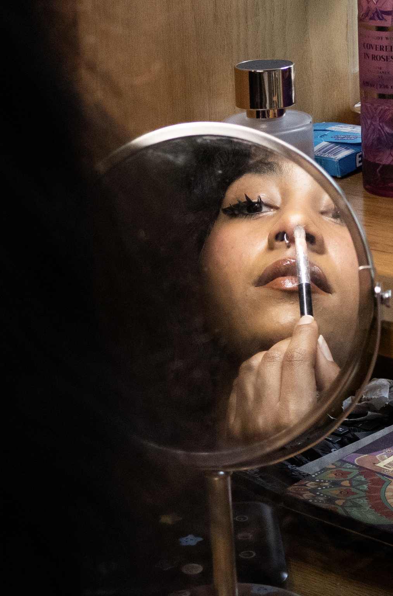
          <div style="text-align:left;">
            <p><strong><em>Q: How do you feel with makeup on, versus without it?</em></strong><br>A: I usually take it off before the gym, but with it on, I just feel put together—like I’m ready to start the day.</p>
            <p><strong><em>Q: Do you feel like you’re changing yourself or revealing yourself when you wear makeup?</em></strong><br>A: I think I’m just showing off—it doesn’t change my face that much. It’s just a form of self-expression. Especially eyeshadow—that’s where I feel the most creative. People don’t take makeup seriously because women do it, but I think it’s a real form of creativity.</p>
            <p><strong><em>Q: Do you change how you do your makeup depending on who you’re around?</em></strong><br>A: Around family, I don’t care. But in professional settings, I’ll tone it down. I love dramatic eyeliner and eyeshadow, but that’s “not professional.” Also, eyeshadow takes a lot of work, so sometimes I’m just lazy and don’t do it.</p>
            <p><strong><em>Q: What’s your favorite part of your routine?</em></strong><br>A: Putting on my highlighter. It’s at the end, when everything’s done, and it’s just a nice finishing touch.</p>
            <p><strong><em>Q:Did anyone ever tell you that you should or shouldn’t wear makeup?</em></strong><br>A: When I was younger, I wanted to wear red lipstick and my mom was like, “Yeah, no, you’re too young for that.” But no one really told me not to wear makeup in general. Most of my family doesn’t wear it.</p>  
            <p><strong><em>Q: What role does makeup play in your identity?</em></strong><br>A: I don’t think it’s like a huge part, but my eyeliner is something I feel really connected to. And my eyeshadow, when I do it—it feels creative, personal, and different. It’s more than just covering up—it’s part of how I express myself.</p>
            </div>
          
          <div style="text-align:left;">
            <p><strong><em>Q: Did you grow up with any beauty standards?</em></strong><br>A: Yeah, in society for sure. The lighter your skin, the thinner you are, the better you’re perceived. I went to a mostly white school, so there were a lot of Eurocentric beauty standards around. But my friends were mostly Black, so we stuck together.</p>
            <p><strong><em>Q: Has your race or cultural background shaped how you use makeup?</em></strong><br>A: Yeah, especially growing up. There weren’t many products in my shade or with the right undertones. It would look gray on me. For a long time, I didn’t wear any base at all. Then someone told me to try a tinted serum—and that worked way better.</p>
            <p><strong><em>Q: Have you ever felt pressure to look a certain way?</em></strong><br>A: Definitely. I don’t think you can live in a Eurocentric society as a person of color and not feel pressure. Whether I act on it consciously or not is hard to tell—but I do think a lot of it happens subconsciously.</p>
            <p><strong><em>Q: Do you follow makeup trends?</em></strong><br>A: Not really. Most of the trending stuff is hard to do. I don’t use beauty blenders or brushes much—just my fingers. I’ve tried trends like strawberry or espresso makeup, but I usually stick with what works for me.</p>
            <p><strong><em>Q: What’s one makeup product you can’t live without?</em></strong><br>A:Eyeliner or mascara. Even if I don’t do my base, I’ll always do my lashes or liner.</p>
            <p><strong><em>Q: What has makeup taught you about yourself?</em></strong><br>A: It’s helped me appreciate my face more. Just spending time looking at yourself while getting ready—it creates a closer relationship with yourself. It’s not always about learning something new, but appreciating what’s already there.</p>
            <p><strong><em>Q: How do you think your makeup use will change as you get older?</em></strong><br>A: I hope I keep doing what I want—like alternative styles and eyeshadow. I don’t like how society thinks older people shouldn’t care about beauty. I want to resist that. I’ll probably just find new products and keep doing what I like.</p>
            </div>
          <a class="button" href="#stories">back</a>
        </div>
      `;
    } else if (name === 'Kamalani') {
      root.innerHTML = `
        <div class="story-container">
          <h2>Kamalani Aipa</h2>
          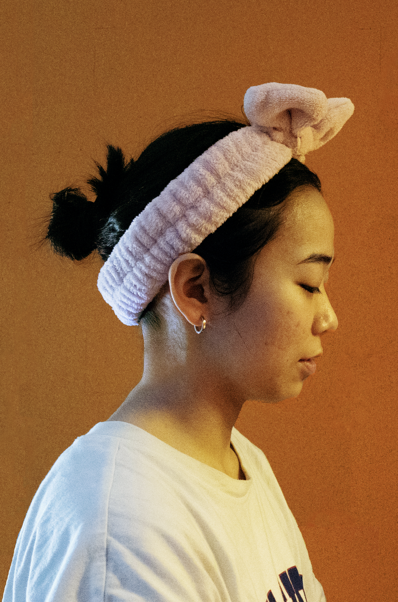
          <div style="text-align:left;">
            <p><strong><em>Q: What’s your earliest memory of makeup?</em></strong><br>A: I have such a vivid memory. I was probably in elementary school, and I got into my mom’s makeup bag. I made my eyes look like a raccoon—she used dark purple and black eyeshadow. I thought I looked so good. I looked terrifying.</p>
            <p><strong><em>Q: When did you start actually wearing makeup?</em></strong><br>A: I think it was sophomore year of college. Before that, I didn’t wear much at all—not even in high school or freshman year. But looking back at my makeup from then… my eyeliner was scary. I definitely overdid it.</p>
            <p><strong><em>Q: What influenced how you learned makeup?</em></strong><br>A: I used to look up “Asian girl makeup look” on Pinterest. Then, when I went to Japan, I started watching YouTube and TikToks—some in Japanese. That’s when my style shifted from American to more Asian makeup.</p>
            <p><strong><em>Q: What’s your favorite part of getting ready?/em></strong><br>A: The very end—when I’m done and I can see it all put together. I also really like putting on blush.</p>
          </div>
          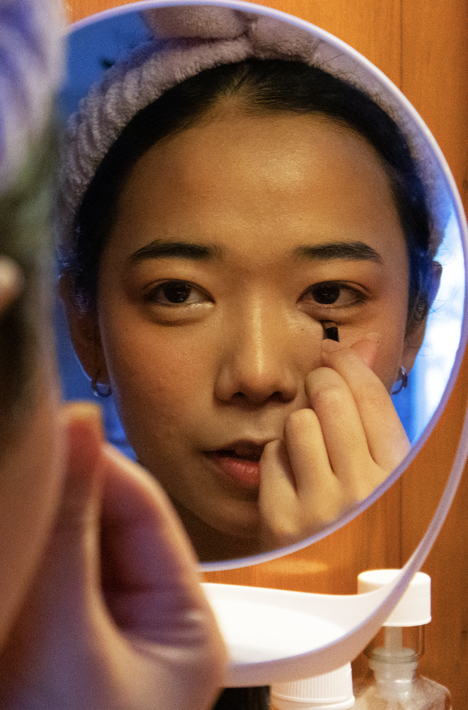
          <div style="text-align:left;">
            <p><strong><em>Q: How do you feel with makeup on versus off?</em></strong><br>A: Honestly? When I don’t wear it, I feel kind of unprepared. I wore a mask today just ‘cause I didn’t feel “ready.” In Japan, everyone looks so good all the time. That made me more conscious. It definitely changed how I think about myself.</p>
            <p><strong><em>Q: When you wear makeup, do you feel like you’re changing yourself or enhancing?</em></strong><br>A: I think it’s more about enhancing. But sometimes I see a picture and I’m like, “Damn, that’s not me.” Still, I feel more confident with it on.</p>
            <p><strong><em>Q: Do you wear makeup differently around other people?</em></strong><br>A: Around friends here, I don’t try as hard—I feel more comfortable. But in Japan, I’d put a lot of effort into it. Now I do it for fun.</p>
            <p><strong><em>Q: What role does makeup play in your identity?</em></strong><br>A: I think when I wear it, it gives me confidence—like a little weapon. If I’m anxious before a presentation or something, makeup helps me feel better. It also made me realize I’m a little insecure. Before, I had that “I don’t care” mindset, but honestly, I do care—at least a little.</p>
            </div>
          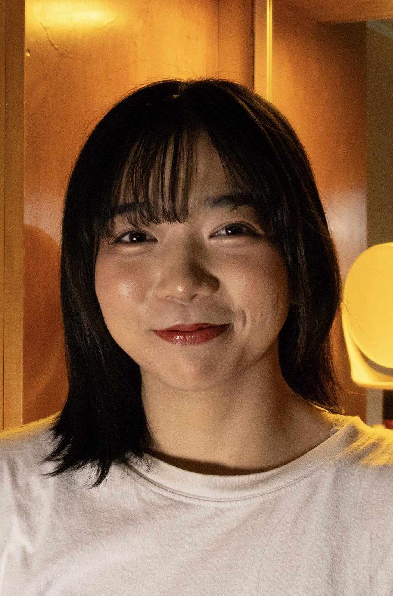
          <div style="text-align:left;">
            <p><strong><em>Q: Are there beauty standards you grew up with?</em></strong><br>A: Yes—and they were conflicting. I grew up in Hawaii, where tan skin and a natural look are ideal. But Asian beauty standards are about being light-skinned, straight hair, very different. I used to have super long, wavy hair, and when I cut it off, my grandma said she’d disown me. She didn’t.</p>
            <p><strong><em>Q: Do you follow makeup trends?</em></strong><br>A: I think I used to, but now I just do what works for me. Maybe I still follow some unconsciously based on who I follow. I used to be deep into skincare TikTok too—but that just made me buy a bunch of stuff that didn’t work. Now I stick with Asian skincare. It’s helped my skin a lot.</p>
            <p><strong><em>Q: What’s one makeup product you couldn’t live without?</em></strong><br>A: Brown eyeliner. Even if I don’t wear anything else, I’ll put that on.</p>
            <p><strong><em>Q: What has makeup taught you about yourself?</em></strong><br>A: That I’m a little insecure. But also that it’s fun now. It used to be stressful ‘cause I didn’t know what I was doing. Now it’s a confidence booster. Like, before a big thing, I’ll do my makeup and feel more ready.</p>
          </div>
          <a class="button" href="#stories">back</a>
        </div>
      `;
    } else if (name === 'Dani') {
      root.innerHTML = `
        <div class="story-container">
          <h2>Dani Reynoso</h2>
          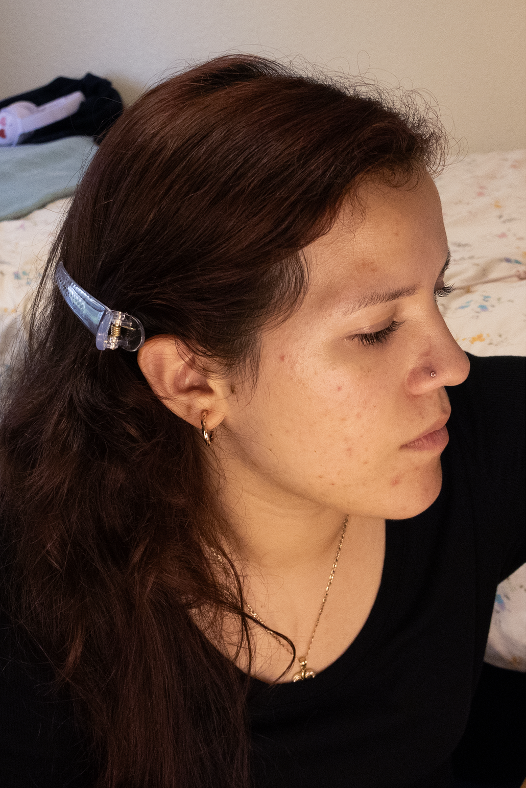
          <div style="text-align:left;">
            <p><strong><em>Q: So, who first introduced you to makeup?</em></strong><br>A: Um, my mom. She never did it a lot, but I always admired her when she did do it.</p>
            <p><strong><em>Q: When did you start wearing makeup—like, going out to do it?</em></strong><br>A: Only during the pandemic. I wanted to do really simple, like, eyebrows, eyeliner, mascara. In middle school, my mom didn’t let me, so whenever I wanted to, I bought [some makeup] from the store and I would put it on when I got to school, and I would take it off when I was going home so she wouldn’t see me wearing it. With permission, probably during the pandemic. I tried out creative stuff because I saw what other people were doing.</p>
            <p><strong><em>Q: Did anyone ever tell you that you should or shouldn't wear makeup?</em></strong><br>A: Yes, my mom—and also, like, my dad too. They always thought of it as, like, “Oh, that’s for grown people.”</p>
            <p><strong><em>Q: What’s your favorite part of getting ready?</em></strong><br>A: Listening to music.</p>
            <p><strong><em>Q: How do you feel with makeup on, and how about without it?</em></strong><br>A: Sometimes I just do the bare minimum—like tinted moisturizer.
 Without it, if I don’t do at least a bare minimum, I always feel crusty. Even if I’m fresh out the shower, I feel unprepared if I don’t have, like, mascara, brushed eyebrows, whatever.
 With it on, I feel very confident—like I’m ready for the day.</p>
            <p><strong><em>Q: Do you feel like you're changing yourself, revealing yourself, or both when you do your makeup?</em></strong><br>A: I would say kind of changing, because I do it for special occasions. And when I do it, my confidence changes. I feel like I am changing—I express myself more freely when I’m comfortable. Like, it’s a different version of me.</p>
            
            </div>
          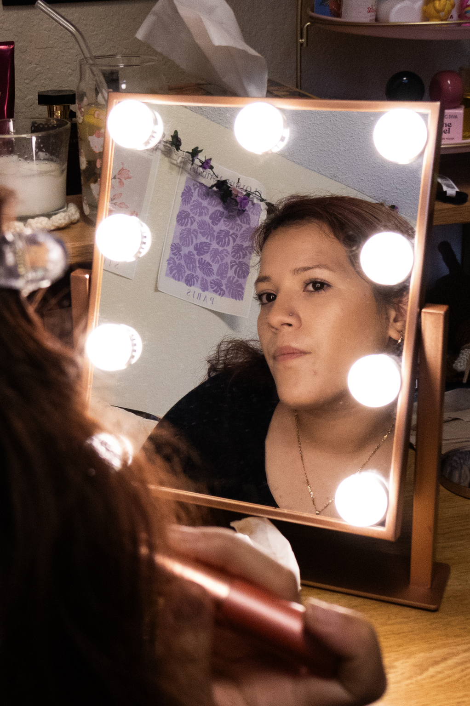
          <div style="text-align:left;">
            <p><strong><em>Q: Do you wear makeup differently around different people?</em></strong><br>A: Around my parents—I don’t do anything crazy. But if I’m going out with Allen or his friends, or just for the weekend when I want to feel confident, I do more. With my siblings, especially my sisters, we get ready together—like, in the summer we’d go to Chinatown and intentionally do very obvious makeup, not just natural.</p>
            <p><strong><em>Q: How would you define your makeup style?</em></strong><br>A: I don’t think I have one.</p>
            <p><strong><em>Q: What role does makeup play in your identity?</em></strong><br>A: I don’t know. I feel like it’s not very large, ‘cause I don’t do it super often. I don’t think it means or says anything about me. But I’m proud of my makeup looks—I can tell you that.</p>
            <p><strong><em>Q: Are there beauty standards you grew up with?</em></strong><br>A: Being pale, definitely. I’m very white-passing. Not my features necessarily, but because I’m pale, it was easier to look over. A lot of my cousins are darker, and I feel like they were held to different standards.</p>
            <p><strong><em>Q: Has your race or cultural background shaped how you use makeup?</em></strong><br>A: Yes. Like with my mom, my parents, and my grandparents, they were like: this is something only women do. There’s a big distinction between being a girl and being a woman. My parents never let me paint my nails. Even now they say only women who are… promiscuous do that. So it was like, if you do makeup when you’re too young, it doesn’t make you promiscuous, but that’s how people will see you. Now that I’m a woman, I can do it freely.</p>
            </div>
          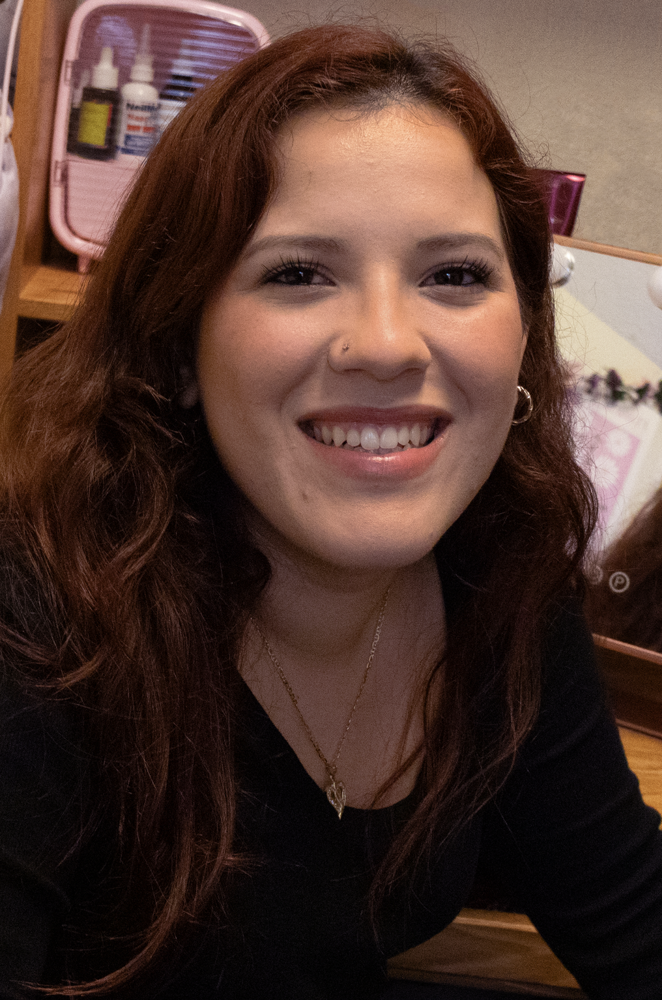
          <div style="text-align:left;">
            <p><strong><em>Q: How do trends affect you? Do you follow them, ignore them, or something else?</em></strong><br>A: Makeup trends don’t affect me because I don’t like to buy stuff and have multiples. I don’t use it all, and I don’t like to spend money on that. Trends are always changing, and it’s hard to keep up.</p>
            <p><strong><em>Q: What’s one makeup product you couldn’t live without?</em></strong><br>A: My eye pencil. I have no eyebrows.</p>
            <p><strong><em>Q: What has makeup taught you about yourself?</em></strong><br>A: I don’t know. I don’t think it’s taught me anything… maybe that I’m a bad bitch?</p>
            <p><strong><em>Q: How do you think your makeup use will change as you get older?</em></strong><br>A: I think I’ll adapt to changes in my skin. When I had acne, I didn’t put anything on my face—my skin was too sensitive. So I think I’ll have different routines and products as I age.</p>
            <p><strong><em>Q: Do you have anything else you want to tell me about makeup?</em></strong><br>A: I like it. It makes me feel very cute.</p>
            </div>
          <a class="button" href="#stories">back</a>
        </div>
      `;
    } else if (name === 'Karla') {
      root.innerHTML = `
        <div class="story-container">
          <h2>Karla Cruz Sanchez</h2>
          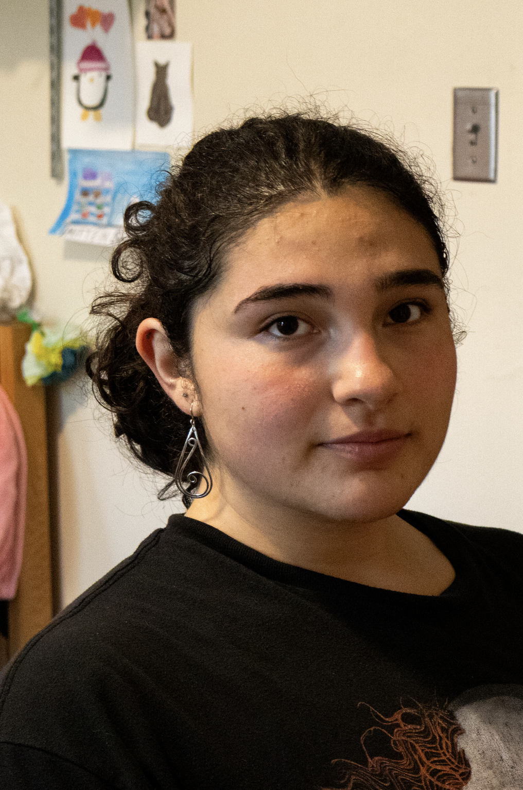
          <div style="text-align:left;">
            <p><strong><em>Q: What’s your earliest memory of makeup?</em></strong><br>A: Watching my older sister do makeup—or my mom lining her lips for church. I had an aunt who loved makeup too. She always told me I’d have to wear it when I was older, but I never felt like I needed to. Still, I grew up around women who wore makeup.</p>
            <p><strong><em>Q: When did you start wearing it yourself?</em></strong><br>A: Junior or senior year of high school. My little sister started experimenting with makeup around that time, and it became this bonding thing between us. She’d go buy makeup, and I’d buy the same things in my shade. That made it really fun.</p>
            <p><strong><em>Q: Did anyone ever tell you that you should or shouldn’t wear makeup?</em></strong><br>A: My mom kind of gave mixed messages—she’d say I didn’t need it, but then she’d also tell me to put some on. My sisters would be like, “Karla, do your makeup—at least put on lips or something.” Back then I was like, “ugh,” but now I see they were just trying to motivate me to care for myself.</p>
            <p><strong><em>Q: What’s your favorite part of getting ready?</em></strong><br>A: The step-by-step process. It feels like building something—like my face is a canvas. I love watching everything come together.</p>
            <p><strong><em>Q: How do you feel with makeup on, and how about without it?</em></strong><br>A: Without it, I feel normal. With it, sometimes I look in the mirror and I’m like, “who the hell is that?” I don’t wear makeup often, so it can feel like a transformation—sometimes even a little scary.</p>
            <p><strong><em>Q: Do you feel like you're changing yourself or revealing yourself with makeup?</em></strong><br>A: Mostly changing. But I can see how it’s revealing too, because I like to highlight my features. Still, it often feels like I’m seeing someone else in the mirror.</p>
          </div>
          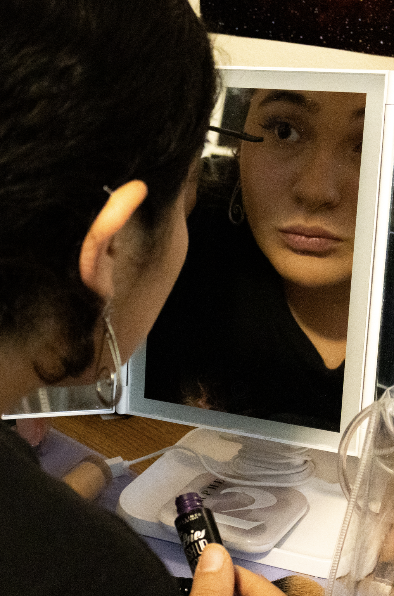
          <div style="text-align:left;">
            <p><strong><em>Q: Do you do your makeup differently around different people?</em></strong><br>A: Not really. I learned how to do it from my sister, Rosita, and I always follow her steps. It’s not situational—it’s just what she taught me.</p>
            <p><strong><em>Q: What role does makeup play in your identity?</em></strong><br>A: It’s mostly about sisterhood. Makeup is a bonding activity for us. It was a way to teach and be patient with each other. We all wanted to help each other look good without being harsh about it.</p>
            <p><strong><em>Q: Did you grow up with any beauty standards?</em></strong><br>A: Yeah, but they were more about body size than makeup. Makeup wasn’t a big standard in my house. My mom’s attitude toward it changed a lot depending on her mood.</p>
            <p><strong><em>Q: Has your race or cultural background shaped your makeup use?</em></strong><br>A: Yeah. I already present really boldly, so adding makeup makes me feel even bolder. I’ve been told I’m intimidating—and with makeup, that only increases.</p>
            <p><strong><em>Q: Have you ever felt pressure to look a certain way?</em></strong><br>A: Yeah, I think so. Growing up in a Mexican household, beauty and appearance were always topics of conversation. There were always standards to fulfill, especially for Latina women.</p>
            <p><strong><em>Q: Do you follow trends?</em></strong><br>A: I used to follow TikTok tutorials, doing my makeup on the floor. But I don’t do it to follow trends anymore—it’s more personal now.</p>
          </div>
          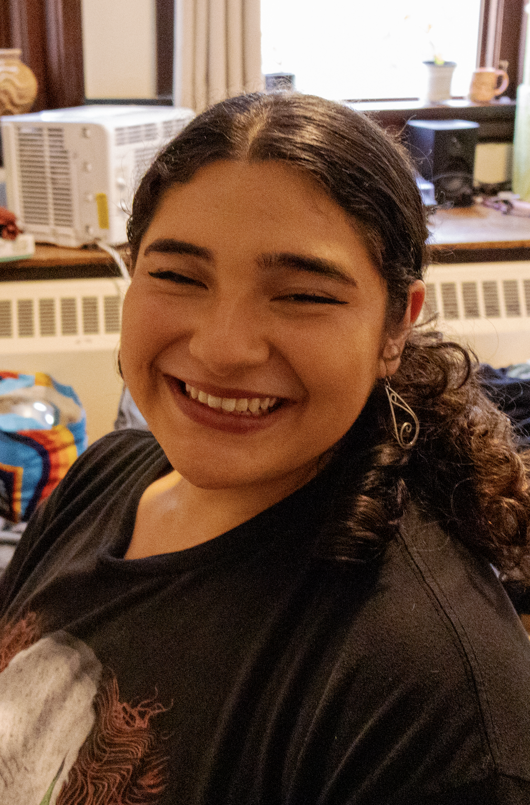
          <div style="text-align:left;">
            <p><strong><em>Q: What makeup product can’t you live without?</em></strong><br>A: Mascara. I don’t need a full face—as long as I have mascara or lash extensions, I feel brighter.</p>
            <p><strong><em>Q: What has makeup taught you about yourself?</em></strong><br>A: It’s helped me appreciate my beauty more.</p>
            <p><strong><em>Q: How do you think your makeup use will change as you get older?</em></strong><br>A: I think I’ll wear it less. I already don’t wear much when I’m back home. I sweat a lot, so unless there’s a fan on me 24/7, I avoid full faces of makeup.</p>
            <p><strong><em>Q: Do you think you’ll ever stop wearing makeup?</em></strong><br>A: No, I’ll always wear mascara or a little something. Special events will always be an excuse to wear it—unless I know I’m gonna sweat.</p>
            <p><strong><em>Q: Do you enjoy doing makeup?</em></strong><br>A: Honestly? I don’t really enjoy it for myself. I enjoy it as a way to connect with my sisters. I like that it’s artistic—but I mostly do it to build a look, not to go out with it. I don’t like the attention it draws. I’m not comfortable with that yet.</p>
          </div>
          <a class="button" href="#stories">back</a>
        </div>
      `;
    }
  } else {
    root.innerHTML = pages[hash] || pages.home;
  }
};

  
    window.addEventListener('hashchange', render);
    render();
  </script>  
</body>
</html>
